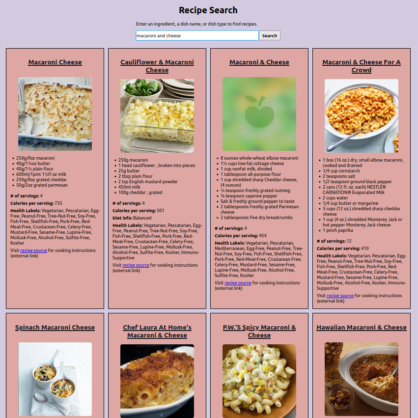
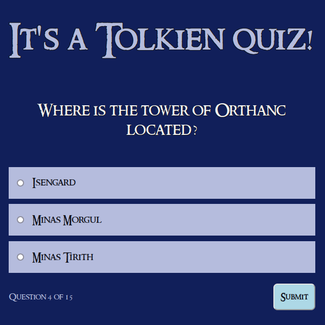

Projects
(November 2023): I've done some major stylistic updates to this portfolio's project section. These updates do a better job promoting the projects themselves, as well as allowing me to include additional context or information for each project. There's also a better responsive pattern when viewing this portfolio across a variety of device widths.
In addition to the major updates to my development portfolio, I've done some minor work on my photography portfolio. Most notably, I've added titles for each image which will display in desktop view, and I've restyled the hover effects to incorporate the new content. In my eyes these changes may be minor, but they make the portfolio feel more professional.
Check it out!
(October 2023): I have completed my certification to become a ScrumMaster! Achieving this certification has brought a semblance of order and understanding to my experience as an engineer. Having previously worked on scrum teams, I never focused too hard about why we did some things--just that they seemed to make sense. With this course I now understand more completely the reasons scrum events are an integral part of the development process. Credential details can be
viewed here.
In addition to my new certification, I've done some behind-the-scenes work on this portfolio page. I replaced the inline SVGs with image elements, and updated the display to move the descriptors into a figure caption. Previously, this information was hidden behind a cursor hover action.
(September 2023): I have launched my photography portfolio! This is a special moment for me, as I worked relentlessly to sift through the more than 70,000 photos I've taken to select the very best of my nature photography. Beyond simply selecting the images, each one has a custom caption and includes species identification. In addition to all the work that entails, I built the portfolio from the ground up using Next.js & TypeScript as the code, Cloudinary as the CDN & API, and Vercel as the site host. Working with Next.js was a brand new endeavor for me, and I'm very glad I went this route.
Take a look!
(July 2023): I'm still working on the photo gallery project. When it came time to deploy I encountered some unexpected difficulties with serving the back end in production. While the project was built as React/Express, this is not the best tech setup for what I'm attempting to accomplish. The scope of the project changed along the way, and the current iteration is over-engineered. Therefore, I'm rebuilding the project as a Next.js app to leverage serverless functions. I'll be deploying this to Vercel, and both Vercel and Cloudinary suggest this approach.
I've made some minor updates to this portfolio to include some better information about the ultimate goal of each of the practice projects.
(May 2023): I revamped this portfolio page to remove bloated code, close security vulnerabilities, and update dependencies, and upgrade from Webpack 3 to Webpack 5. I'm continuing to work on my photo gallery project. There are some kinks with how the Cloudinary API serves data that I need to resolve, as well as finalizing accessibility support for mobile view before I can publish this project.
(August 2022): I'm working on building out a photo gallery using React, Typescript, Express, and the Cloudinary API. I'm excited to expand my Typescript knowledge, revisit Express, and dabble with a new API. Let's be honest, the early projects where I built my own back end leave a lot to be desired. But hey, that was early days when I was just learning there's more to software than HTML! This upcoming project will be hosted on Netlify, which is nice and easy, even if it will get a wacky URL.
I just wrapped up version 3.1.1 of my Recipe Search app! This latest update, while minor, addressed a number of security vulnerabilities in the code. Code maintenance is a critical tool in an engineer's belt, and this was the first time I got to really dive into it solo.
Give it a go!
Of course, my learning is never complete. Every time I try out a new-to-Jacob project, read a code article, or watch a code tutorial I'm learning something new, or deepening my comprehension of engineering concepts.
This is a small selection of finished projects. You can use the links to either visit the project itself, or to view the code directly on GitHub. Each of these was was built as a hands-on way to learn something specific, and goes far beyond just the stated learning goal.

JF Nature
Explore the natural world! Join me as I share the best photography from my adventures split into these seven general categories: Aquatic creatures, Birds, Flora, Fungi, Invertebrates, Landscapes, & Non-avian vertebrates.
Learning goal: To learn the Next.js framework and serverless functions
Tech used:

Cloudinary API

Next.js

TypeScript

Vercel
Recipe Search
Discover new recipes in an instant! Quickly scan through a recipe's ingredients without having to scroll past any stories.
Learning goal: To build an accessible React app that is fast, with no frills.
Tech used:

React

Sass


Weather App
Check the current weather for almost any city in the world. Watch as the background updates based on the weather conditions.
Learning goal: To leverage an API while practicing with React, and conditionally render CSS based on API responses.
Tech used:
React
Sass
These are two of my older projects, and are the first ones I did after my General Assembly coursework. They still work, though I have no intentions for keeping them updated or for expanding them beyond what they are now. Give 'em a shot if you have five minutes to kill and want to do something simple.
Tolkien Quiz
Test your knowledge of one of literature's greatest storytellers.
Learning goal: To build an app using plain JavaScript in order to work with data from a JSON file.
Tech used:


Rock, Paper, Scissors
Challenge the computer in a bout of RoShamBo.
Learning goal: To build and deploy an app using only plain JavaScript.
Tech used:
These projects are dead, are not maintained, and are non-functional. These were part of my General Assembly coursework, required basic user authentication, and may leverage Heroku for backend support. I'm keeping them here more as a reminder of how far I've come than to show off something that's neato.
Reader's Wishlist
A book suggester for the indecisive reader.
Learning goal: A first endeavor in old-school React, plus a first shot at Node/Express on the backend.
Tech used:

Bootstrap

Heroku

Node
React
Sass
Collection Builder
A single-page application for cataloging musical records.
Learning goal: To build my first full-stack app, learn Ruby on Rails, and deploy a back end.
Tech used:

Handlebars
Heroku

jQuery

Ruby on Rails

Tic-Tac-Toe
A time-wasting classic!
Learning goal: To build my first app, learn JavaScript, and deploy a project.
Tech used: